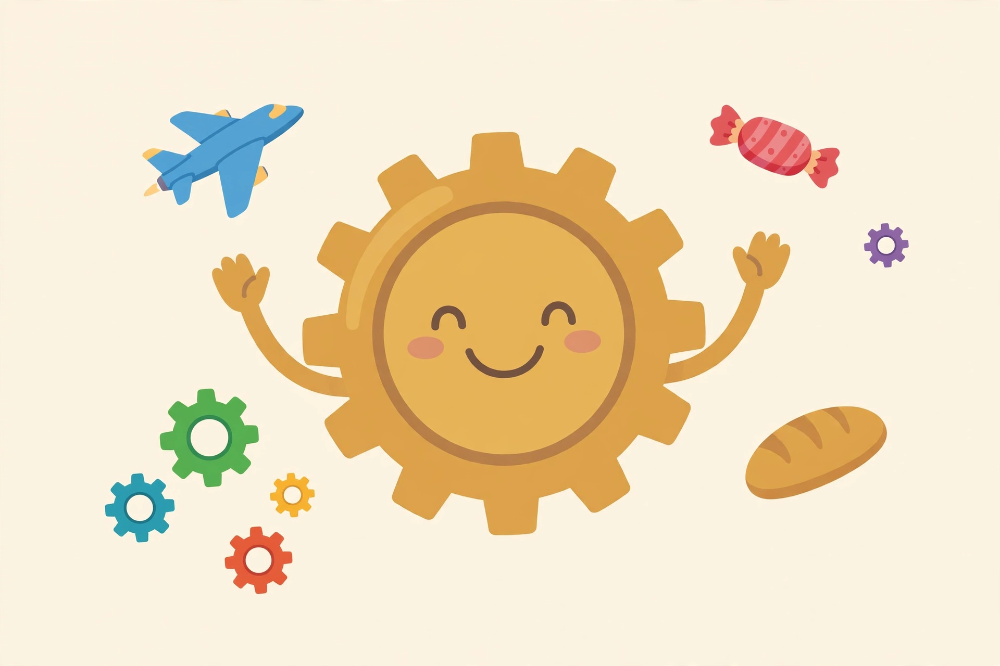

Meet Ginny the Gear, the mascot of this website. The guide here is JAH Generator Librarian, keeper of The Signature Boundless Generator Archive Database.
Demo guide — answers from this subject’s own records on this page. The guide below answers from the records shipped on this page (keyword answers from the archive). It is not the full engine and it does not check the live web.
Online fact-checking: not connected yet — it needs the network’s hosted guide, which is waiting on setup. This page does not pretend to check the live web.
It knows The Signature Boundless Generator Archive Database and its Signature edition:
It answers from the 24 records in the archive sample on this page. It cannot check the live web, it cannot open new records, and it never asks for a key — no key is ever entered, saved, or shown here.
Sample questions, with their demo answers as written text:
Q: How many generator records are in the archive?
A: 137,025 records in The Signature Boundless Generator Archive Database, all live.
Q: What is the first record in the archive?
A: JAH-GEN-JET-000001, Fennahaven J-4, in the jet family. It is a light trainer with a 911 nm range and 4 seats.
Q: What families of things does the archive hold?
A: Four families: jet, medical, food, and candy. In the first 500 records, jet, medical, and food hold 150 records each, and candy holds 50.
Q: What is a light trainer?
A: A light trainer is a small jet for learning to fly. Fennahaven J-4, Velaline J-89, Istiwing J-83, and Solaworks J-3 are all light trainers in the archive, each with 4 seats.
Q: What is the Signature edition of the archive?
A: The Signature Boundless Generator Archive Database (Signature Edition), 20 records, live. It is a field guide to the archive: core definitions, five principles, a glossary, and a record on the archive-aware guide.
The archive sample comes from the live manifest and the live archive indexes, read 2026-11-21. Full records: The Signature Boundless Generator Archive Database.
Accessible version of this page · Download the archive sample (JSON)